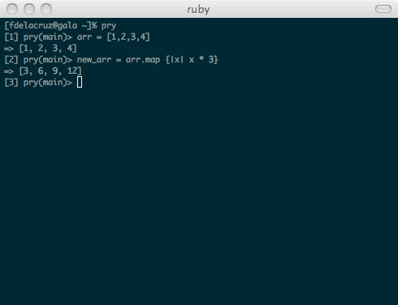

The Enumerable#map method is handy method for updating or acting upon each element in a given array. Simply put, the method will pass in each element to a code block and return a new array with the updated elements.

Here we take a sample array (1..4) and multiply each element in the array by three using the Enumerable#map method. Then, we assign this output to a new variable "new_arr" returning the output.